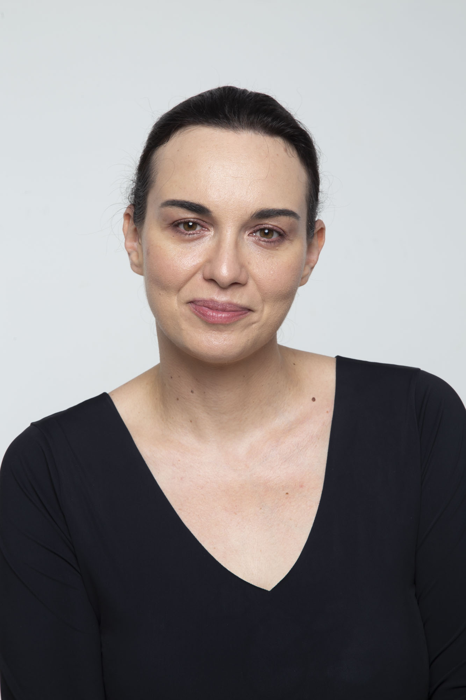

<!DOCTYPE html>
<html lang="en">
<head>
    <meta charset="UTF-8">
    <meta name="viewport" content="width=device-width, initial-scale=1.0">
    <link rel="icon" href="/favicon.ico" sizes="32x32">
    <link rel="icon" href="/favicon.svg" type="image/svg+xml">
    <link rel="apple-touch-icon" href="/apple-touch-icon.png">
    <title>Maura Gancitano — Tlon</title>
    <meta name="description" content="Philosopher, pedagogue and writer. Co-founder of Tlon, she works on gender equality, emotional education, digital public spaces, communication and cultural planning.">
    <link rel="canonical" href="https://www.tlon.it/maura-gancitano/en.html">
    <link rel="alternate" hreflang="it" href="https://www.tlon.it/maura-gancitano/index.html">
    <link rel="alternate" hreflang="en" href="https://www.tlon.it/maura-gancitano/en.html">
    <link rel="alternate" hreflang="x-default" href="https://www.tlon.it/maura-gancitano/index.html">

    <!-- Open Graph -->
    <meta property="og:type" content="website">
    <meta property="og:site_name" content="Tlon">
    <meta property="og:locale" content="en_US">
    <meta property="og:locale:alternate" content="it_IT">
    <meta property="og:title" content="Maura Gancitano — Tlon">
    <meta property="og:description" content="Philosopher, pedagogue and writer. Co-founder of Tlon, she works on gender equality, emotional education, digital public spaces, communication and cultural planning.">
    <meta property="og:url" content="https://www.tlon.it/maura-gancitano/en.html">
    <meta property="og:image" content="https://www.tlon.it/assets/images/maura-gancitano.jpg">

    <!-- Twitter -->
    <meta name="twitter:card" content="summary_large_image">
    <meta name="twitter:title" content="Maura Gancitano — Tlon">
    <meta name="twitter:description" content="Philosopher, pedagogue and writer. Co-founder of Tlon, she works on gender equality, emotional education, digital public spaces, communication and cultural planning.">
    <meta name="twitter:image" content="https://www.tlon.it/assets/images/maura-gancitano.jpg">
    <link rel="stylesheet" href="/assets/fonts/fonts.css">
    <style>
        :root {
            --bianco: #ffffff;
            --nero: #0a0a0a;
            --ottanio: #2a6b6b;
            --grigio: #6b6b6b;
            --grigio-chiaro: #e5e5e5;
        }

        html { scroll-behavior: smooth; }
        * { margin: 0; padding: 0; box-sizing: border-box; }
        /* le dimensioni in HTML servono a evitare il salto del layout: qui
           si preserva il rapporto d'aspetto quando la larghezza è fluida */
        img { height: auto; }

        html { font-size: 16px; }
        body { font-family: 'Inter', -apple-system, sans-serif; background: var(--bianco); color: var(--nero); -webkit-font-smoothing: antialiased; }
        ::selection { background: var(--nero); color: var(--bianco); }
        a { color: inherit; text-decoration: none; }

        /* HEADER */
        header {
            position: fixed;
            top: 0;
            left: 0;
            right: 0;
            z-index: 1002;
            padding: 1.5rem 3rem;
            display: flex;
            justify-content: space-between;
            align-items: center;
            background: var(--bianco);
            border-bottom: 1px solid var(--grigio-chiaro);
            transition: background 0.3s ease, border-color 0.3s ease;
        }

        header.menu-open {
            background: var(--nero);
            border-bottom-color: var(--nero);
        }

        .logo { display: flex; align-items: center; }
        .logo img { height: 28px; width: auto; transition: filter 0.3s ease; }

        header.menu-open .logo img {
            filter: invert(1);
        }

        nav { flex-wrap: nowrap; display: flex; gap: clamp(0.9rem, 1.9vw, 2.6rem); }
        nav a { white-space: nowrap; font-size: 0.75rem; font-weight: 500; letter-spacing: 0.15em; text-transform: uppercase; color: var(--nero); opacity: 0.5; transition: opacity 0.3s ease; }
        nav a:hover { opacity: 1; }

        /* LANGUAGE SWITCHER */
        .lang-switch {
            display: flex;
            gap: 0.5rem;
            align-items: center;
            margin-left: 2rem;
            padding-left: 2rem;
            border-left: 1px solid var(--grigio-chiaro);
        }

        .lang-switch a {
            font-size: 0.7rem;
            font-weight: 500;
            letter-spacing: 0.1em;
            text-transform: uppercase;
            color: var(--grigio);
            opacity: 0.5;
            transition: opacity 0.3s ease;
        }

        .lang-switch a:hover,
        .lang-switch a.active {
            opacity: 1;
        }

        .lang-switch a.active {
            color: var(--ottanio);
        }

        /* HAMBURGER */
        .hamburger {
            display: none;
            flex-direction: column;
            justify-content: center;
            align-items: center;
            width: 32px;
            height: 32px;
            cursor: pointer;
            position: relative;
            z-index: 1003;
        }

        .hamburger span {
            display: block;
            width: 24px;
            height: 2px;
            background: var(--nero);
            margin: 3px 0;
            transition: all 0.3s ease;
        }

        .hamburger.active span:nth-child(1) {
            transform: rotate(45deg) translate(5px, 5px);
        }

        .hamburger.active span:nth-child(2) {
            opacity: 0;
        }

        .hamburger.active span:nth-child(3) {
            transform: rotate(-45deg) translate(7px, -6px);
        }

        .hamburger.active span {
            background: var(--bianco);
        }

        /* MOBILE MENU */
        .mobile-menu {
            display: none;
            position: fixed;
            top: 0;
            left: 0;
            right: 0;
            bottom: 0;
            background: var(--nero);
            z-index: 1000;
            flex-direction: column;
            justify-content: center;
            align-items: center;
            gap: 2rem;
            opacity: 0;
            visibility: hidden;
            transition: opacity 0.4s ease, visibility 0.4s ease;
        }

        .mobile-menu.active {
            opacity: 1;
            visibility: visible;
        }

        .mobile-menu a {
            font-family: 'Instrument Serif', serif;
            font-size: 2rem;
            font-style: italic;
            color: var(--bianco);
            opacity: 0;
            transform: translateY(20px);
            transition: opacity 0.4s ease, transform 0.4s ease, color 0.3s ease;
        }
        .mobile-menu-lang {
            display: flex;
            gap: 2.5rem;
            margin-top: 1.5rem;
        }
        .mobile-menu-lang a {
            font-family: 'Inter', sans-serif;
            font-size: 0.8rem;
            font-style: normal;
            letter-spacing: 0.2em;
            text-transform: uppercase;
        }

        .mobile-menu.active a {
            opacity: 1;
            transform: translateY(0);
        }

        .mobile-menu a:nth-child(1) { transition-delay: 0.1s; }
        .mobile-menu a:nth-child(2) { transition-delay: 0.15s; }
        .mobile-menu a:nth-child(3) { transition-delay: 0.2s; }
        .mobile-menu a:nth-child(4) { transition-delay: 0.25s; }
        .mobile-menu a:nth-child(5) { transition-delay: 0.3s; }
        .mobile-menu a:nth-child(6) { transition-delay: 0.35s; }
        .mobile-menu a:nth-child(7) { transition-delay: 0.4s; }
        .mobile-menu a:nth-child(8) { transition-delay: 0.45s; }

        .mobile-menu a:hover { color: var(--ottanio); }

        main { padding-top: 80px; }

        /* BIO HERO */
        .bio-hero { min-height: 70vh; display: grid; grid-template-columns: 1fr 1fr; gap: 6rem; padding: 6rem 3rem; align-items: center; }
        .bio-photo { position: relative; }
        .bio-photo-frame { aspect-ratio: 3/4; background: linear-gradient(135deg, rgba(42, 107, 107, 0.08) 0%, rgba(42, 107, 107, 0.02) 100%); border: 1px solid var(--grigio-chiaro); display: flex; align-items: center; justify-content: center; position: relative; overflow: hidden; }
        .bio-photo-frame::before { content: ''; position: absolute; top: 2rem; left: 2rem; right: 2rem; bottom: 2rem; border: 1px solid var(--ottanio); opacity: 0.3; }
        .bio-photo-frame img { width: 100%; height: 100%; object-fit: cover; object-position: center top; }
        .bio-intro { max-width: 600px; }
        .bio-label { font-size: 0.85rem; font-weight: 500; letter-spacing: 0.25em; text-transform: uppercase; color: var(--ottanio); margin-bottom: 2rem; display: flex; align-items: center; gap: 1rem; }
        .bio-label::before { content: ''; width: 40px; height: 1px; background: var(--ottanio); }
        .bio-name { font-family: 'Instrument Serif', serif; font-size: clamp(3rem, 6vw, 5rem); font-weight: 400; line-height: 1.1; letter-spacing: -0.02em; margin-bottom: 2rem; }
        .bio-name em { font-style: italic; }
        .bio-tagline { font-size: 1.25rem; line-height: 1.7; color: var(--grigio); margin-bottom: 2.5rem; }
        .bio-tagline strong { color: var(--nero); font-weight: 600; }
        .bio-meta { display: flex; flex-direction: column; gap: 0.5rem; font-size: 0.9rem; color: var(--grigio); }
        .bio-meta span { display: flex; align-items: center; gap: 0.75rem; }
        .bio-meta span::before { content: ''; width: 6px; height: 6px; background: var(--ottanio); border-radius: 50%; }
        .bio-meta strong { color: var(--nero); font-weight: 600; }

        /* BIO CONTENT */
        .bio-content { padding: 6rem 3rem; background: var(--bianco); }
        .bio-section { max-width: 900px; margin: 0 auto 6rem; }
        .bio-section:last-child { margin-bottom: 0; }
        .section-header { display: flex; justify-content: space-between; align-items: baseline; margin-bottom: 3rem; padding-bottom: 1.5rem; border-bottom: 1px solid var(--grigio-chiaro); }
        .section-title { font-family: 'Instrument Serif', serif; font-size: 2.5rem; font-weight: 400; letter-spacing: -0.02em; }
        .section-num { font-family: 'Instrument Serif', serif; font-size: 1.25rem; font-style: italic; color: var(--ottanio); }
        .bio-text { font-size: 1.1rem; line-height: 2; color: var(--nero); }
        .bio-text p { margin-bottom: 1.5rem; }
        .bio-text p:last-child { margin-bottom: 0; }
        .bio-text strong { font-weight: 600; }

        /* LIBRI */
        .libro-categoria { margin-bottom: 3rem; }
        .libro-categoria:last-child { margin-bottom: 0; }
        .categoria-title { font-size: 0.85rem; font-weight: 500; letter-spacing: 0.2em; text-transform: uppercase; color: var(--ottanio); margin-bottom: 1.5rem; display: flex; align-items: center; gap: 1rem; }
        .categoria-title::after { content: ''; flex: 1; height: 1px; background: var(--grigio-chiaro); }
        .libro { display: grid; grid-template-columns: 60px 1fr auto; gap: 1.5rem; padding: 1.25rem 0; border-bottom: 1px solid var(--grigio-chiaro); align-items: baseline; }
        .libro:last-child { border-bottom: none; }
        .libro-anno { font-family: 'Instrument Serif', serif; font-size: 1rem; font-style: italic; color: var(--ottanio); }
        .libro-info { display: flex; flex-direction: column; gap: 0.25rem; }
        .libro-titolo { font-family: 'Instrument Serif', serif; font-size: 1.25rem; font-weight: 400; }
        .libro-sottotitolo { font-size: 0.9rem; color: var(--grigio); }
        .libro-editore { font-size: 0.85rem; color: var(--grigio); text-align: right; }
        .libro-premio { display: inline-block; margin-top: 0.5rem; font-size: 0.75rem; font-weight: 500; letter-spacing: 0.1em; text-transform: uppercase; color: var(--ottanio); padding: 0.25rem 0.5rem; border: 1px solid var(--ottanio); }

        /* TRADUZIONI */
        .traduzioni-grid { display: grid; grid-template-columns: repeat(auto-fill, minmax(280px, 1fr)); gap: 2rem; }
        .traduzione-item { padding: 1.5rem; border: 1px solid var(--grigio-chiaro); transition: border-color 0.3s ease; }
        .traduzione-item:hover { border-color: var(--ottanio); }
        .traduzione-titolo { font-family: 'Instrument Serif', serif; font-size: 1.1rem; margin-bottom: 0.75rem; }
        .traduzione-lingue { font-size: 0.85rem; color: var(--grigio); line-height: 1.6; }
        .traduzione-note { display: block; margin-top: 0.5rem; font-size: 0.8rem; font-style: italic; color: var(--ottanio); }

        /* PODCAST */
        .podcast-grid { display: grid; gap: 1.5rem; }
        .podcast-item { display: grid; grid-template-columns: 1fr 2fr; gap: 2rem; padding: 2rem; border: 1px solid var(--grigio-chiaro); transition: border-color 0.3s ease; }
        .podcast-item:hover { border-color: var(--ottanio); }
        .podcast-title { font-family: 'Instrument Serif', serif; font-size: 1.5rem; font-weight: 400; }
        .podcast-meta { font-size: 0.85rem; color: var(--ottanio); margin-top: 0.5rem; }
        .podcast-desc { font-size: 0.95rem; line-height: 1.8; color: var(--grigio); }

        /* LISTA VOCI */
        .lista-voci { display: flex; flex-direction: column; gap: 0; }
        .voce-item { display: grid; grid-template-columns: 1fr auto; gap: 2rem; padding: 1rem 0; border-bottom: 1px solid var(--grigio-chiaro); align-items: baseline; }
        .voce-item:last-child { border-bottom: none; }
        .voce-titolo { font-size: 1rem; line-height: 1.6; color: var(--nero); }
        .voce-titolo em { font-style: italic; }
        .voce-titolo strong { font-weight: 600; }
        .voce-dettaglio { font-size: 0.85rem; color: var(--grigio); text-align: right; white-space: nowrap; }
        .lista-semplice { display: flex; flex-direction: column; gap: 0; }
        .lista-semplice .voce-item { grid-template-columns: 1fr; }
        .pubblicazioni-categoria { margin-bottom: 3rem; }
        .pubblicazioni-categoria:last-child { margin-bottom: 0; }

        /* SPECCHIO FEATURE */
        .specchio-feature { background: var(--nero); color: var(--bianco); position: relative; overflow: hidden; }
        .specchio-bg { position: absolute; top: 0; left: 0; right: 0; bottom: 0; overflow: hidden; }
        .specchio-bg-text { position: absolute; top: 50%; left: 50%; transform: translate(-50%, -50%); font-family: 'Instrument Serif', serif; font-size: 25vw; font-style: italic; color: rgba(42, 107, 107, 0.06); white-space: nowrap; pointer-events: none; }
        .specchio-glow { position: absolute; width: 600px; height: 600px; border-radius: 50%; background: radial-gradient(circle, rgba(42, 107, 107, 0.15) 0%, transparent 70%); animation: specchioFloat 12s ease-in-out infinite; }
        .specchio-glow:nth-child(2) { top: -200px; right: -100px; }
        .specchio-glow:nth-child(3) { bottom: -300px; left: -100px; animation-delay: -6s; }
        @keyframes specchioFloat { 0%, 100% { transform: translate(0, 0) scale(1); opacity: 0.5; } 50% { transform: translate(20px, -20px) scale(1.1); opacity: 1; } }
        .specchio-content { display: grid; grid-template-columns: 1fr 1fr; gap: 6rem; padding: 8rem 3rem; max-width: 1400px; margin: 0 auto; position: relative; z-index: 1; }
        .specchio-left { display: flex; flex-direction: column; justify-content: center; }
        .specchio-label { font-size: 0.75rem; font-weight: 500; letter-spacing: 0.4em; text-transform: uppercase; color: var(--ottanio); margin-bottom: 1.5rem; display: flex; align-items: center; gap: 1rem; }
        .specchio-label::before { content: ''; width: 30px; height: 1px; background: var(--ottanio); }
        .specchio-title { font-family: 'Instrument Serif', serif; font-size: clamp(2.5rem, 5vw, 4rem); font-weight: 400; line-height: 1.1; margin-bottom: 1rem; }
        .specchio-title em { font-style: italic; color: var(--ottanio); }
        .specchio-subtitle { font-family: 'Instrument Serif', serif; font-size: 1.5rem; font-style: italic; color: rgba(255,255,255,0.5); margin-bottom: 2rem; }
        .specchio-desc { font-size: 1.1rem; line-height: 1.9; color: rgba(255,255,255,0.7); margin-bottom: 2rem; }
        .specchio-desc strong { color: var(--bianco); font-weight: 500; }
        .specchio-premio { display: inline-flex; align-items: center; gap: 1rem; padding: 1rem 1.5rem; border: 1px solid var(--ottanio); background: rgba(42, 107, 107, 0.1); margin-bottom: 2rem; }
        .specchio-premio-icon { font-size: 1.25rem; }
        .specchio-premio-text { font-size: 0.85rem; font-weight: 500; letter-spacing: 0.1em; text-transform: uppercase; color: var(--ottanio); }
        .specchio-right { display: flex; flex-direction: column; gap: 2rem; }
        .specchio-quote { padding: 3rem; border-left: 3px solid var(--ottanio); background: rgba(255,255,255,0.02); }
        .specchio-quote p { font-family: 'Instrument Serif', serif; font-size: 1.4rem; font-style: italic; line-height: 1.6; color: rgba(255,255,255,0.9); margin-bottom: 1.5rem; }
        .specchio-quote cite { font-size: 0.85rem; font-style: normal; color: var(--ottanio); letter-spacing: 0.1em; text-transform: uppercase; }
        .specchio-traduzioni { padding: 2rem; border: 1px solid rgba(255,255,255,0.1); }
        .specchio-traduzioni-label { font-size: 0.7rem; font-weight: 600; letter-spacing: 0.25em; text-transform: uppercase; color: var(--ottanio); margin-bottom: 1rem; }
        .specchio-traduzioni-list { display: flex; flex-wrap: wrap; gap: 0.75rem; }
        .specchio-traduzioni-list span { padding: 0.5rem 1rem; font-size: 0.85rem; background: rgba(255,255,255,0.05); border: 1px solid rgba(255,255,255,0.1); transition: all 0.3s ease; }
        .specchio-traduzioni-list span:hover { border-color: var(--ottanio); background: rgba(42, 107, 107, 0.1); }
        .specchio-cta { display: inline-flex; align-items: center; gap: 1rem; padding: 1.25rem 2.5rem; font-size: 0.8rem; font-weight: 500; letter-spacing: 0.15em; text-transform: uppercase; color: var(--bianco); border: 1px solid rgba(255,255,255,0.3); transition: all 0.4s ease; align-self: flex-start; }
        .specchio-cta:hover { background: var(--ottanio); border-color: var(--ottanio); }
        .specchio-cta svg { width: 16px; height: 16px; transition: transform 0.3s ease; }
        .specchio-cta:hover svg { transform: translateX(4px); }

        /* FOOTER */
        footer { padding: 4rem 3rem; border-top: 1px solid var(--grigio-chiaro); }
        .footer-nav { flex-wrap: nowrap; display: flex; justify-content: space-between; align-items: center; }
        .footer-back { font-size: 0.85rem; font-weight: 500; letter-spacing: 0.1em; text-transform: uppercase; color: var(--grigio); display: flex; align-items: center; gap: 0.5rem; transition: color 0.3s ease; }
        .footer-back:hover { color: var(--nero); }
        .footer-back::before { content: '←'; }
        .footer-other { text-align: right; }
        .footer-other-label { font-size: 0.75rem; letter-spacing: 0.15em; text-transform: uppercase; color: var(--grigio); margin-bottom: 0.5rem; }
        .footer-other-name { font-family: 'Instrument Serif', serif; font-size: 1.5rem; }
        .footer-other-name a { transition: color 0.3s ease; }
        .footer-other-name a:hover { color: var(--ottanio); }

        /* RESPONSIVE */
        @media (max-width: 1100px) { .specchio-content { grid-template-columns: 1fr; gap: 4rem; } }
        @media (max-width: 900px) {
            header { padding: 1rem 1.5rem; }
            nav { flex-wrap: nowrap; display: none; }
            .hamburger { display: flex; }
            .mobile-menu { display: flex; }
            .lang-switch { display: none; }
            .bio-hero { grid-template-columns: 1fr; gap: 3rem; }
            .bio-photo { order: -1; max-width: 400px; margin: 0 auto; }
            .podcast-item { grid-template-columns: 1fr; gap: 1rem; }
            .libro { grid-template-columns: 1fr; gap: 0.5rem; }
            .libro-anno { font-size: 0.85rem; }
            .libro-editore { text-align: left; }
            .voce-item { grid-template-columns: 1fr; gap: 0.5rem; }
            .voce-dettaglio { text-align: left; }
            .specchio-content { padding: 5rem 1.5rem; }
        }
        @media (max-width: 600px) {
            .bio-hero, .bio-content { padding-left: 1.5rem; padding-right: 1.5rem; }
            footer { padding: 2rem 1.5rem; }
            .footer-nav { flex-wrap: nowrap; flex-direction: column; gap: 2rem; text-align: center; }
            .footer-other { text-align: center; }
        }

        .reveal { opacity: 0; transform: translateY(20px); transition: opacity 0.6s ease, transform 0.6s ease; }
        .reveal.visible { opacity: 1; transform: translateY(0); }
    
        /* Rispetta la preferenza di sistema per il movimento ridotto:
           orbite, particelle, parallasse e reveal diventano istantanei. */
        @media (prefers-reduced-motion: reduce) {
            *, *::before, *::after {
                animation-duration: 0.001ms !important;
                animation-iteration-count: 1 !important;
                transition-duration: 0.001ms !important;
                scroll-behavior: auto !important;
            }
            .reveal { opacity: 1 !important; transform: none !important; }
        }

        .skip-link {
            position: absolute; left: -9999px; top: 0; z-index: 3000;
            background: #0a0a0a; color: #ffffff; padding: 0.75rem 1.25rem;
            font-size: 0.85rem; letter-spacing: 0.05em;
        }
        .skip-link:focus { left: 0; }
        :focus-visible { outline: 2px solid #2a6b6b; outline-offset: 3px; }
</style></style>
    <noscript><style>.reveal{opacity:1 !important;transform:none !important}</noscript>

    <script type="application/ld+json">
    {
      "@context": "https://schema.org",
      "@type": "Person",
      "@id": "https://www.tlon.it/maura-gancitano/#person",
      "name": "Maura Gancitano",
      "url": "https://www.tlon.it/maura-gancitano/",
      "image": "https://www.tlon.it/assets/images/maura-gancitano.jpg",
      "jobTitle": "Philosopher, pedagogist and writer",
      "worksFor": {"@id": "https://www.tlon.it/#organization", "@type": "Organization", "name": "Tlon", "url": "https://www.tlon.it/"},
      "sameAs": ["https://www.tlon.it/maura-gancitano/en.html"]
    }
    </script>
</head>
<body>
<a class="skip-link" href="#contenuto">Skip to content</a>

    <header>
        <a href="../" class="logo"></a>
        <nav>
            <a href="../il-progetto.html">The Project</a>
            <a href="../andrea-colamedici/en.html">Colamedici</a>
            <a href="../maura-gancitano/en.html">Gancitano</a>
            <a href="../edizioni.html">Publishing</a>
            <a href="../formazione.html">Education</a>
            <a href="../eventi-festival.html">Events</a>
            <a href="../press.html">Press</a><a href="../contatti/">Contact</a>
        </nav>
        <div class="lang-switch">
            <a href="./index.html">IT</a>
            <a href="./en.html" class="active">EN</a>
        </div>
        <div class="hamburger" id="hamburger" role="button" tabindex="0" aria-label="Apri il menu" aria-expanded="false" aria-controls="mobileMenu">
            <span></span>
            <span></span>
            <span></span>
        </div>
    </header>

    <div class="mobile-menu" id="mobileMenu">
        <a href="../il-progetto.html">The Project</a>
        <a href="../andrea-colamedici/en.html">Colamedici</a>
        <a href="../maura-gancitano/en.html">Gancitano</a>
        <a href="../edizioni.html">Publishing</a>
        <a href="../formazione.html">Education</a>
        <a href="../eventi-festival.html">Events</a>
        <a href="../press.html">Press</a><a href="../contatti/">Contact</a>
        <div class="mobile-menu-lang"><a href="./index.html">IT</a><a href="./en.html" class="active">EN</a></div>
    </div>

    <main id="contenuto">
        <section class="bio-hero">
            <div class="bio-photo">
                <div class="bio-photo-frame">
                    
                </div>
            </div>
            <div class="bio-intro">
                <span class="bio-label">Founder</span>
                <h1 class="bio-name">Maura <em>Gancitano</em></h1>
                <p class="bio-tagline"><strong>Philosopher</strong>, pedagogue and writer. Co-founder of <em>Tlon</em>, she works on gender equality, emotional education, digital public spaces, communication and cultural planning.</p>
                <div class="bio-meta">
                    <span>Mazara del Vallo, 1985</span>
                    <span>Philosophical Director, <strong>Festival del Pensare Contemporaneo</strong></span>
                    <span><strong>Premio Rapallo 2022</strong></span>
                </div>
            </div>
        </section>

        <div class="bio-content">
            <section class="bio-section reveal">
                <div class="section-header">
                    <h2 class="section-title">Biography</h2>
                    <span class="section-num">I</span>
                </div>
                <div class="bio-text">
                    <p>Maura Gancitano is a <strong>philosopher, pedagogue and writer</strong>. She holds a degree in <strong>political philosophy</strong> from Vita-Salute San Raffaele University in Milan and a master's degree in <strong>Pedagogical Sciences and Educational Planning</strong> from the University of Foggia, with a thesis in Philosophy of Education titled <em>"The narrative device between constraint and possibility. Critical genealogy and micropedagogical perspectives on contemporary subjectivation processes"</em>. In 2015 she founded <em>Tlon</em> together with Andrea Colamedici, with whom she curates the column "Prendila con Filosofia" for <em>Vanity Fair</em>.</p>
                    <p>She has collaborated with <strong>La Repubblica</strong>, <em>La Stampa</em>, <em>Linus</em>, <strong>Radio 1</strong>, <strong>Radio 24</strong> and <em>Radio Freccia</em>. She was included by Vanity Fair Italy, France and Spain in the "Generation Future" list, among the artists, activists and pioneers shaping the future of Europe, and in StartUpItalia's <strong>Unstoppable Women</strong> list, the 150 women to follow in the world of innovation in Italy.</p>
                    <p>Her books have been translated into <strong>eight languages</strong>. With the essay <em>Specchio delle mie brame. La prigione della bellezza</em> (Einaudi 2022) she won the <strong>Premio Rapallo</strong>, ex aequo with Bianca Pitzorno. She has given talks at Italian and international universities and institutions, including Politecnico di Milano, IED Milano, Università Cattolica, Bicocca, Roma Tre, LUISS, University of Trento, Perugia, Columbia University and Konkoly Observatory of the Hungarian Academy of Sciences.</p>
                </div>
            </section>

            <section class="bio-section reveal">
                <div class="section-header">
                    <h2 class="section-title">Books</h2>
                    <span class="section-num">II</span>
                </div>
                <div class="libro-categoria">
                    <div class="categoria-title">Individual works</div>
                    <div class="libro"><span class="libro-anno">2024</span><div class="libro-info"><span class="libro-titolo">Erotica dei sentimenti</span><span class="libro-sottotitolo">For a New Emotional Education</span></div><span class="libro-editore">Einaudi</span></div>
                    <div class="libro"><span class="libro-anno">2024</span><div class="libro-info"><span class="libro-titolo">Perché studiare filosofia (non) è noioso</span><span class="libro-sottotitolo">Why Studying Philosophy Is (Not) Boring</span></div><span class="libro-editore">Mondadori</span></div>
                    <div class="libro"><span class="libro-anno">2022</span><div class="libro-info"><span class="libro-titolo">Specchio delle mie brame</span><span class="libro-sottotitolo">The Prison of Beauty</span><span class="libro-premio">Premio Rapallo 2022</span></div><span class="libro-editore">Einaudi</span></div>
                </div>
                <div class="libro-categoria">
                    <div class="categoria-title">With Andrea Colamedici</div>
                    <div class="libro"><span class="libro-anno">2025</span><div class="libro-info"><span class="libro-titolo">Botanica della meraviglia</span><span class="libro-sottotitolo">Botany of Wonder</span></div><span class="libro-editore">HarperCollins</span></div>
                    <div class="libro"><span class="libro-anno">2023</span><div class="libro-info"><span class="libro-titolo">Ma chi me lo fa fare?</span><span class="libro-sottotitolo">How Work Has Deceived Us: The End of the Spell</span></div><span class="libro-editore">HarperCollins</span></div>
                    <div class="libro"><span class="libro-anno">2022</span><div class="libro-info"><span class="libro-titolo">Il gioco del pensiero</span><span class="libro-sottotitolo">The Game of Thought</span></div><span class="libro-editore">Zanichelli</span></div>
                    <div class="libro"><span class="libro-anno">2021</span><div class="libro-info"><span class="libro-titolo">L'alba dei nuovi dèi</span><span class="libro-sottotitolo">From Plato to Big Data</span></div><span class="libro-editore">Mondadori</span></div>
                    <div class="libro"><span class="libro-anno">2021</span><div class="libro-info"><span class="libro-titolo">Prendila con filosofia</span><span class="libro-sottotitolo">A Manual for Personal Flourishing</span></div><span class="libro-editore">HarperCollins</span></div>
                    <div class="libro"><span class="libro-anno">2019</span><div class="libro-info"><span class="libro-titolo">Liberati della brava bambina</span><span class="libro-sottotitolo">Eight Stories to Flourish</span></div><span class="libro-editore">HarperCollins</span></div>
                    <div class="libro"><span class="libro-anno">2018</span><div class="libro-info"><span class="libro-titolo">La società della performance</span><span class="libro-sottotitolo">How to Escape the Cave</span></div><span class="libro-editore">Tlon</span></div>
                    <div class="libro"><span class="libro-anno">2017</span><div class="libro-info"><span class="libro-titolo">Lezioni di meraviglia</span><span class="libro-sottotitolo">Journeys Between Philosophy and Imagination</span></div><span class="libro-editore">Tlon</span></div>
                    <div class="libro"><span class="libro-anno">2016</span><div class="libro-info"><span class="libro-titolo">Tu non sei Dio</span><span class="libro-sottotitolo">Phenomenology of Contemporary Spirituality</span></div><span class="libro-editore">Tlon</span></div>
                </div>
            </section>

            <section class="bio-section reveal">
                <div class="section-header">
                    <h2 class="section-title">Translations</h2>
                    <span class="section-num">III</span>
                </div>
                <div class="traduzioni-grid">
                    <div class="traduzione-item"><div class="traduzione-titolo">Botanica della meraviglia</div><div class="traduzione-lingue">English (limited edition, Salotto NYC 2026), Spanish (forthcoming), French (forthcoming)<span class="traduzione-note">English language rights available</span></div></div>
                    <div class="traduzione-item"><div class="traduzione-titolo">Specchio delle mie brame</div><div class="traduzione-lingue">Spanish, Chinese, Chinese (Taiwan), Portuguese, Korean, Romanian, French (forthcoming)</div></div>
                    <div class="traduzione-item"><div class="traduzione-titolo">Liberati della brava bambina</div><div class="traduzione-lingue">Chinese, Korean</div></div>
                    <div class="traduzione-item"><div class="traduzione-titolo">Prendila con filosofia</div><div class="traduzione-lingue">Chinese, Spanish, Polish, Korean</div></div>
                    <div class="traduzione-item"><div class="traduzione-titolo">Perché studiare filosofia (non) è noioso</div><div class="traduzione-lingue">Spanish</div></div>
                    <div class="traduzione-item"><div class="traduzione-titolo">La società della performance</div><div class="traduzione-lingue">Chinese (forthcoming)</div></div>
                    <div class="traduzione-item"><div class="traduzione-titolo">Ma chi me lo fa fare?</div><div class="traduzione-lingue">Chinese (forthcoming)</div></div>
                </div>
            </section>

            <section class="bio-section reveal">
                <div class="section-header">
                    <h2 class="section-title">Podcasts</h2>
                    <span class="section-num">IV</span>
                </div>
                <div class="podcast-grid">
                    <div class="podcast-item"><div><div class="podcast-title">Scuola di Filosofie</div><div class="podcast-meta">Audible · with Andrea Colamedici</div></div><div class="podcast-desc">A journey in two seasons through the great thinkers of the twentieth century, from phenomenology to existentialism, from philosophy of mind to critical theory, to apply their insights to everyday life.</div></div>
                    <div class="podcast-item"><div><div class="podcast-title">Pensare Europeo</div><div class="podcast-meta">European Parliament · with Andrea Colamedici</div></div><div class="podcast-desc">A series of conversations designed to strengthen the sense of belonging to the European community, connecting MEPs with philosophers, activists, historians and Italian artists.</div></div>
                    <div class="podcast-item"><div><div class="podcast-title">Meno per meno</div><div class="podcast-meta">RaiPlaySound · with Niccolò Fabi</div></div><div class="podcast-desc">Ten episodes that start from the songs chosen by Niccolò Fabi to celebrate his 25 years of career, transforming the lyrics into sparks for addressing disparate themes.</div></div>
                    <div class="podcast-item"><div><div class="podcast-title">Tlon – Il podcast</div><div class="podcast-meta">All platforms</div></div><div class="podcast-desc">Interviews, conversations and contributions from Tlon events and festivals, to stay updated on the project's initiatives and discover the themes of philosophical outreach.</div></div>
                </div>
            </section>

            <section class="bio-section reveal">
                <div class="section-header">
                    <h2 class="section-title">Teaching and Lectures</h2>
                    <span class="section-num">V</span>
                </div>
                <div class="lista-voci">
                    <div class="voce-item"><span class="voce-titolo">Seminar <em>When Work Becomes Identity: The Philosophical Roots of Academic Burnout</em> – Konkoly Observatory, Hungarian Academy of Sciences (online, Budapest)</span><span class="voce-dettaglio">2026</span></div>
                    <div class="voce-item"><span class="voce-titolo">Conference <em>Culture Digitali Adesso</em> – Accademia di Belle Arti di Firenze</span><span class="voce-dettaglio">2026</span></div>
                    <div class="voce-item"><span class="voce-titolo">Lecture <em>Scrittura come fioritura</em> – Università Cattolica del Sacro Cuore, Milan (online)</span><span class="voce-dettaglio">2026</span></div>
                    <div class="voce-item"><span class="voce-titolo">Lecture at LUISS, Rome (with Andrea Colamedici)</span><span class="voce-dettaglio">2026</span></div>
                    <div class="voce-item"><span class="voce-titolo"><strong>Prompt Thinking</strong> – IED Roma</span><span class="voce-dettaglio">2022–present</span></div>
                    <div class="voce-item"><span class="voce-titolo"><em>From Writing to Digital: The Crack We Inhabit</em> – University of Foggia (with Andrea Colamedici)</span><span class="voce-dettaglio">2021–2022</span></div>
                    <div class="voce-item"><span class="voce-titolo">Masterclass on Gender Stereotypes – University of Messina / Taobuk</span><span class="voce-dettaglio">2025</span></div>
                    <div class="voce-item"><span class="voce-titolo">Transversal Skills Course – University of Bari</span><span class="voce-dettaglio">2025</span></div>
                    <div class="voce-item"><span class="voce-titolo">Seminar <em>Social Emotional Learning and Teacher Training</em> – University of Verona</span><span class="voce-dettaglio">2025</span></div>
                    <div class="voce-item"><span class="voce-titolo">Seminar <em>Wellbeing: Contexts and Trajectories of a Generative Framework</em> – University of Padova (Rovigo campus)</span><span class="voce-dettaglio">2025</span></div>
                    <div class="voce-item"><span class="voce-titolo">Spring School <em>Philosophy and Digital Transformation</em> – University of Udine</span><span class="voce-dettaglio">2023, 2024</span></div>
                    <div class="voce-item"><span class="voce-titolo">Conference <em>Women and Science</em> – CNR Genoa</span><span class="voce-dettaglio">2024</span></div>
                    <div class="voce-item"><span class="voce-titolo">Conference <em>Gender Cultures</em> – IULM Milan</span><span class="voce-dettaglio">2024</span></div>
                    <div class="voce-item"><span class="voce-titolo">ICS Exchange Conference, keynote on <em>Prompt Thinking</em> – University of Foggia</span><span class="voce-dettaglio">2024</span></div>
                    <div class="voce-item"><span class="voce-titolo">Conference on Artificial Intelligence in Tourism – University of Oristano</span><span class="voce-dettaglio">2024</span></div>
                    <div class="voce-item"><span class="voce-titolo"><em>How Natural Is Artificial Intelligence?</em> – Circolo dei Lettori, Turin with SIpEIA</span><span class="voce-dettaglio">2023</span></div>
                    <div class="voce-item"><span class="voce-titolo">Workshop <em>Human Sustainability: Overcoming the Performance Society and Imagining New Models</em> – University of Padova</span><span class="voce-dettaglio">2023</span></div>
                </div>
            </section>

            <section class="bio-section reveal">
                <div class="section-header">
                    <h2 class="section-title">Scientific Committees</h2>
                    <span class="section-num">VI</span>
                </div>
                <div class="lista-voci">
                    <div class="voce-item"><span class="voce-titolo"><strong>Fondazione WoW</strong></span><span class="voce-dettaglio">Scientific Director</span></div>
                    <div class="voce-item"><span class="voce-titolo"><strong>Fondazione Lotus</strong> by Elisa Toffoli</span><span class="voce-dettaglio"></span></div>
                    <div class="voce-item"><span class="voce-titolo"><strong>United Network</strong></span><span class="voce-dettaglio"></span></div>
                    <div class="voce-item"><span class="voce-titolo"><strong>geniaLAB</strong> at AANT</span><span class="voce-dettaglio"></span></div>
                    <div class="voce-item"><span class="voce-titolo"><strong>Rizzoli Education</strong></span><span class="voce-dettaglio"></span></div>
                    <div class="voce-item"><span class="voce-titolo"><em>Intrecci</em> series – Firenze University Press (with University of Siena)</span><span class="voce-dettaglio"></span></div>
                    <div class="voce-item"><span class="voce-titolo">International Conference <em>Visual Education / ASTERA</em> – University of Foggia</span><span class="voce-dettaglio"></span></div>
                </div>
            </section>

            <section class="bio-section reveal">
                <div class="section-header">
                    <h2 class="section-title">Artistic Direction</h2>
                    <span class="section-num">VII</span>
                </div>
                <div class="lista-voci">
                    <div class="voce-item"><span class="voce-titolo"><strong>Festival del Pensare Contemporaneo</strong> in Piacenza</span><span class="voce-dettaglio">Philosophical Director</span></div>
                    <div class="voce-item"><span class="voce-titolo"><strong>Festa della Filosofia</strong> at the Triennale in Milan and Rome</span><span class="voce-dettaglio">Creator</span></div>
                    <div class="voce-item"><span class="voce-titolo"><em>ilPod – Italian Podcast Awards</em></span><span class="voce-dettaglio">Creator</span></div>
                </div>
            </section>

            <section class="bio-section reveal">
                <div class="section-header">
                    <h2 class="section-title">Publications</h2>
                    <span class="section-num">VIII</span>
                </div>
                <div class="pubblicazioni-categoria">
                    <div class="categoria-title">Journal Articles</div>
                    <div class="lista-voci">
                        <div class="voce-item"><span class="voce-titolo"><em>Educating the Gaze in the Age of Saturation. Visual Education, Generative AI and Critical Learning Strategies</em> (with Andrea Colamedici) – Astrea 2025 Proceedings, Il Capoverso</span><span class="voce-dettaglio">2025</span></div>
                        <div class="voce-item"><span class="voce-titolo"><em>Artificial Philosophizing: Threat or Opportunity for Thought?</em> – Mondo Digitale</span><span class="voce-dettaglio">2025</span></div>
                        <div class="voce-item"><span class="voce-titolo"><em>Beyond the Tyranny of Urgency: Toward a New Culture of Time</em> – in <em>The Values of Science Between Ethics, Imaginaries and Careers. Proceedings of the 2024 Women and Science Conference</em>, University of Genoa</span><span class="voce-dettaglio">forthcoming</span></div>
                        <div class="voce-item"><span class="voce-titolo"><em>A Human-Centric Revolution. How Artificial Intelligence Is Redefining Work and Human Interaction</em> – Harvard Business Review Italia</span><span class="voce-dettaglio">2024</span></div>
                        <div class="voce-item"><span class="voce-titolo"><em>Women and Science</em> Conference Proceedings</span><span class="voce-dettaglio">2024</span></div>
                        <div class="voce-item"><span class="voce-titolo"><em>Cultural Hegemony or Cancel Culture?</em> – Vita e Pensiero</span><span class="voce-dettaglio">2023</span></div>
                        <div class="voce-item"><span class="voce-titolo">Nuovi Argomenti n. 41 (<em>Not Yet Thirty</em>)</span><span class="voce-dettaglio"></span></div>
                        <div class="voce-item"><span class="voce-titolo">Nuovi Argomenti n. 77</span><span class="voce-dettaglio"></span></div>
                    </div>
                </div>
                <div class="pubblicazioni-categoria">
                    <div class="categoria-title">Contributions to Collective Volumes</div>
                    <div class="lista-voci">
                        <div class="voce-item"><span class="voce-titolo"><em>Sustainability and Sustainable Development. A Transdisciplinary Reading</em> – UTET</span><span class="voce-dettaglio">2025</span></div>
                        <div class="voce-item"><span class="voce-titolo"><em>Words Are a Swarm of Bees</em> – Sperling & Kupfer</span><span class="voce-dettaglio">2025</span></div>
                        <div class="voce-item"><span class="voce-titolo"><em>Franco Battiato. The Music of Time</em> – Oblomov</span><span class="voce-dettaglio">2025</span></div>
                        <div class="voce-item"><span class="voce-titolo"><em>It's the Thought That Counts</em> – AA.VV., IlSole24ore</span><span class="voce-dettaglio">2025</span></div>
                        <div class="voce-item"><span class="voce-titolo"><em>A Year of Stories 2024</em> – Treccani</span><span class="voce-dettaglio">2023</span></div>
                        <div class="voce-item"><span class="voce-titolo"><em>Which Essay Did You Choose</em> – UTET</span><span class="voce-dettaglio">2023</span></div>
                        <div class="voce-item"><span class="voce-titolo"><em>Now It's Our Turn</em> – Fondazione Terra Santa</span><span class="voce-dettaglio">2022</span></div>
                        <div class="voce-item"><span class="voce-titolo"><em>Out of Time. Starting Again from Nature</em> – Biennale Donna Ferrara</span><span class="voce-dettaglio">2022</span></div>
                        <div class="voce-item"><span class="voce-titolo"><em>Reinhabiting the World</em> – Quodlibet</span><span class="voce-dettaglio">2021</span></div>
                        <div class="voce-item"><span class="voce-titolo"><em>I Say I</em> – Silvana Editoriale for the Galleria Nazionale</span><span class="voce-dettaglio">2021</span></div>
                    </div>
                </div>
                <div class="pubblicazioni-categoria">
                    <div class="categoria-title">Prefaces and Afterwords</div>
                    <div class="lista-voci">
                        <div class="voce-item"><span class="voce-titolo"><em>Dance Me to the End of the World. 30 Performative Exercises in Corvetto</em> by Sotterraneo – Il Saggiatore</span><span class="voce-dettaglio">2025</span></div>
                        <div class="voce-item"><span class="voce-titolo"><em>Measuring the Leap of Frogs</em> by Gabriele Di Luca – Cue Press</span><span class="voce-dettaglio">2025</span></div>
                        <div class="voce-item"><span class="voce-titolo"><em>If I Sleep with Glasses On, Do I See Dreams Better?</em> by Claude Ponti – Babalibri</span><span class="voce-dettaglio">2025</span></div>
                        <div class="voce-item"><span class="voce-titolo"><em>Mor. A Story for My Mothers</em> by Serena Garagnani – ADD Editore</span><span class="voce-dettaglio">2024</span></div>
                        <div class="voce-item"><span class="voce-titolo"><em>The Extra Love</em> by Élisabeth Badinter – Tlon</span><span class="voce-dettaglio">2024</span></div>
                        <div class="voce-item"><span class="voce-titolo"><em>Intrepid</em> by Laura Donadoni – HarperCollins</span><span class="voce-dettaglio">2023</span></div>
                        <div class="voce-item"><span class="voce-titolo"><em>The Beauty Myth</em> by Naomi Wolf – Tlon</span><span class="voce-dettaglio">2022</span></div>
                        <div class="voce-item"><span class="voce-titolo"><em>The Firebrand</em> by Marion Zimmer Bradley – HarperCollins</span><span class="voce-dettaglio">2021</span></div>
                        <div class="voce-item"><span class="voce-titolo"><em>Love Is a Symptom</em> by Leonardo Mendolicchio – Tlon</span><span class="voce-dettaglio">2021</span></div>
                        <div class="voce-item"><span class="voce-titolo"><em>Heroines</em> by Marina Pierri – Tlon</span><span class="voce-dettaglio">2020</span></div>
                    </div>
                </div>
            </section>
        </div>

        <section class="specchio-feature reveal">
            <div class="specchio-bg">
                <span class="specchio-bg-text">Mirror</span>
                <div class="specchio-glow"></div>
                <div class="specchio-glow"></div>
            </div>
            <div class="specchio-content">
                <div class="specchio-left">
                    <span class="specchio-label">Premio Rapallo 2022</span>
                    <h2 class="specchio-title">Mirror, <em>Mirror</em></h2>
                    <p class="specchio-subtitle">The Prison of Beauty</p>
                    <p class="specchio-desc">A philosophical investigation into the <strong>tyranny of beauty</strong> and the relationship between body, identity and power. A book that has crossed Italian borders, translated into seven languages, and which won the <strong>Premio Rapallo 2022</strong> ex aequo with Bianca Pitzorno.</p>
                    <p class="specchio-desc">Why do we feel <em>never enough</em>? Why has women's bodies become a battlefield? Maura Gancitano explores the cultural and philosophical roots of a contemporary obsession, offering tools to break free from it.</p>
                    <div class="specchio-premio"><span class="specchio-premio-icon">✦</span><span class="specchio-premio-text">Premio Rapallo 2022</span></div>
                    <a href="https://shop.tlon.it" target="_blank" class="specchio-cta"><span>Buy the book</span><svg viewBox="0 0 24 24" fill="none" stroke="currentColor" stroke-width="2"><path d="M5 12h14M12 5l7 7-7 7"/></svg></a>
                </div>
                <div class="specchio-right">
                    <div class="specchio-quote"><p>"The female body has become the place where a game is played that never really concerns women, but the power of those who look at them."</p><cite>— Specchio delle mie brame</cite></div>
                    <div class="specchio-traduzioni"><div class="specchio-traduzioni-label">International Translations</div><div class="specchio-traduzioni-list"><span>Spanish</span><span>Chinese</span><span>Chinese (Taiwan)</span><span>Portuguese</span><span>Korean</span><span>Romanian</span><span>French (forthcoming)</span></div></div>
                </div>
            </div>
        </section>
    </main>

    <footer>
        <div class="footer-nav">
            <a href="../" class="footer-back">Back to home</a>
            <div class="footer-other">
                <div class="footer-other-label">The other founder</div>
                <div class="footer-other-name"><a href="../andrea-colamedici/en.html">Andrea Colamedici</a></div>
            </div>
        </div>
    </footer>

    <script>
        const reveals = document.querySelectorAll('.reveal');
        const observer = new IntersectionObserver((entries) => {
            entries.forEach(entry => { if (entry.isIntersecting) entry.target.classList.add('visible'); });
        }, { threshold: 0.1, rootMargin: '0px 0px -50px 0px' });
        reveals.forEach(el => observer.observe(el));

        const hamburger = document.getElementById('hamburger');
        const mobileMenu = document.getElementById('mobileMenu');
        const header = document.querySelector('header');

        hamburger.addEventListener('click', () => {
            hamburger.classList.toggle('active');
            mobileMenu.classList.toggle('active');
            hamburger.setAttribute('aria-expanded', mobileMenu.classList.contains('active'));
            header.classList.toggle('menu-open');
            document.body.style.overflow = mobileMenu.classList.contains('active') ? 'hidden' : '';
        });

        mobileMenu.querySelectorAll('a').forEach(link => {
            link.addEventListener('click', () => {
                hamburger.classList.remove('active');
                mobileMenu.classList.remove('active');
                header.classList.remove('menu-open');
                document.body.style.overflow = '';
            });
        });
    </script>
</body>
</html>